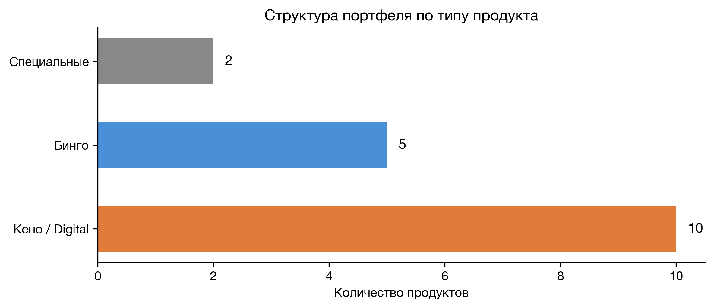
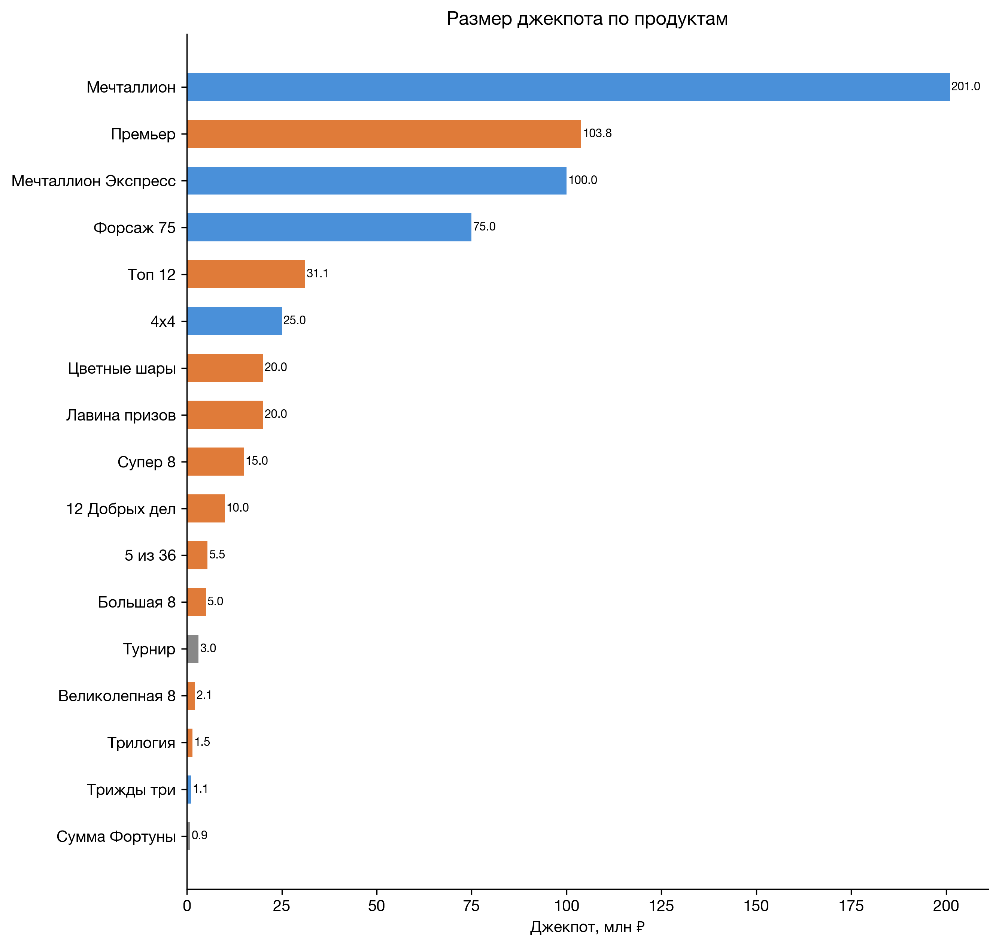
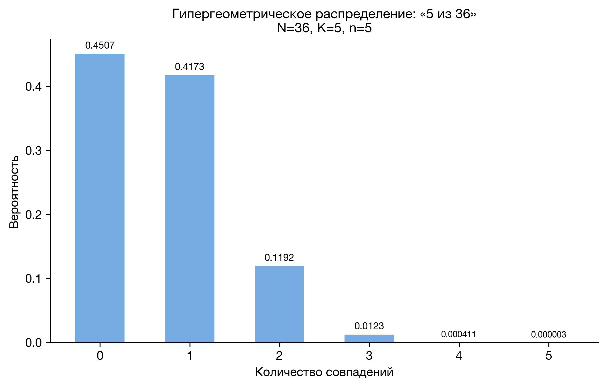
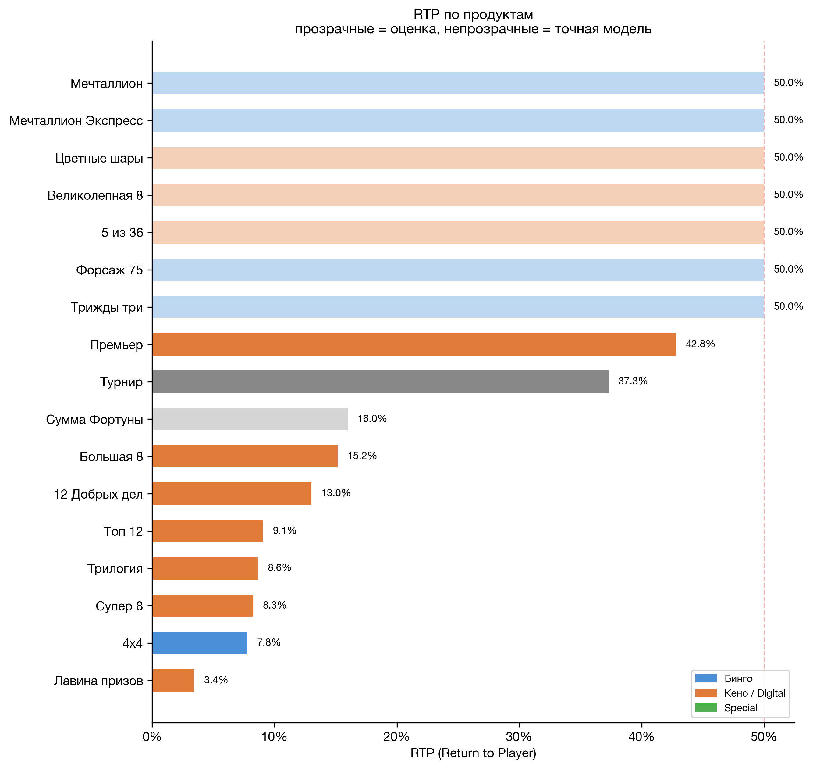
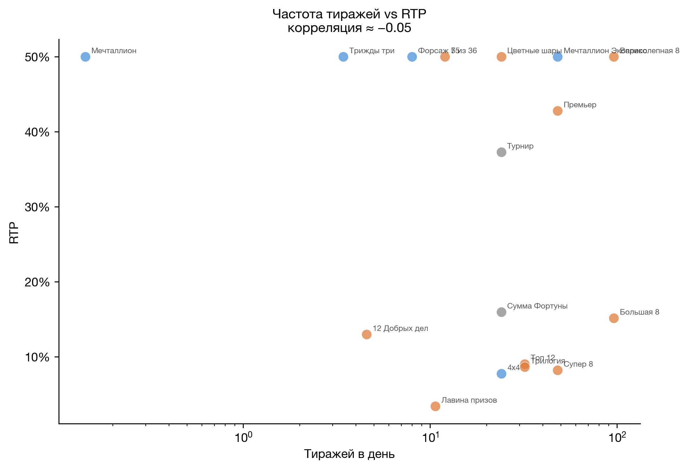
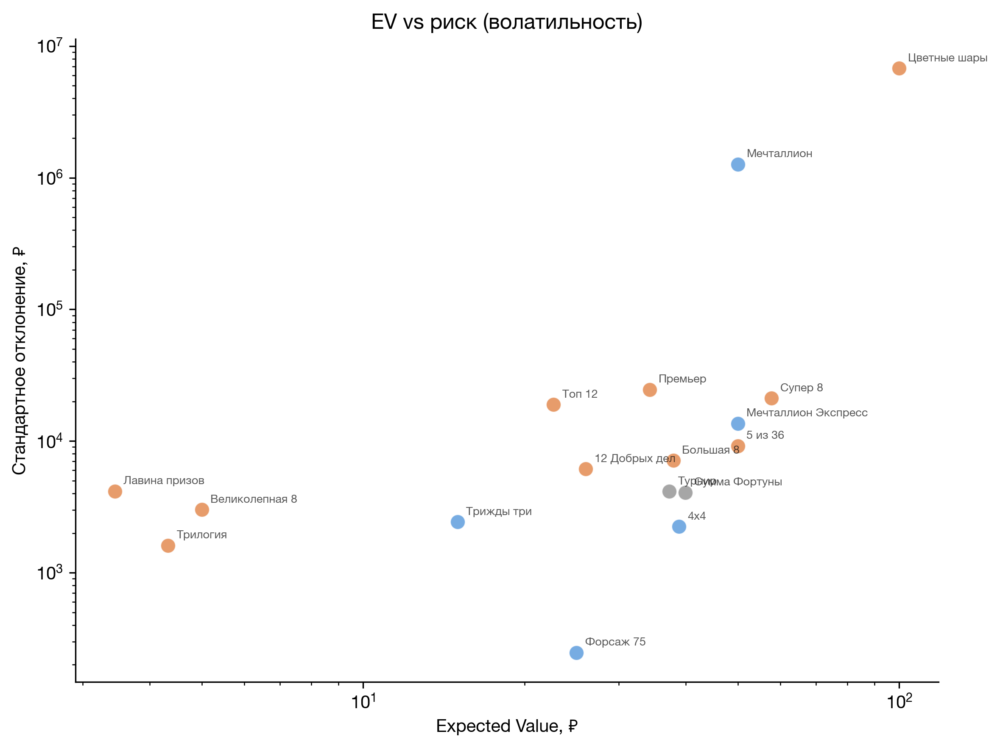
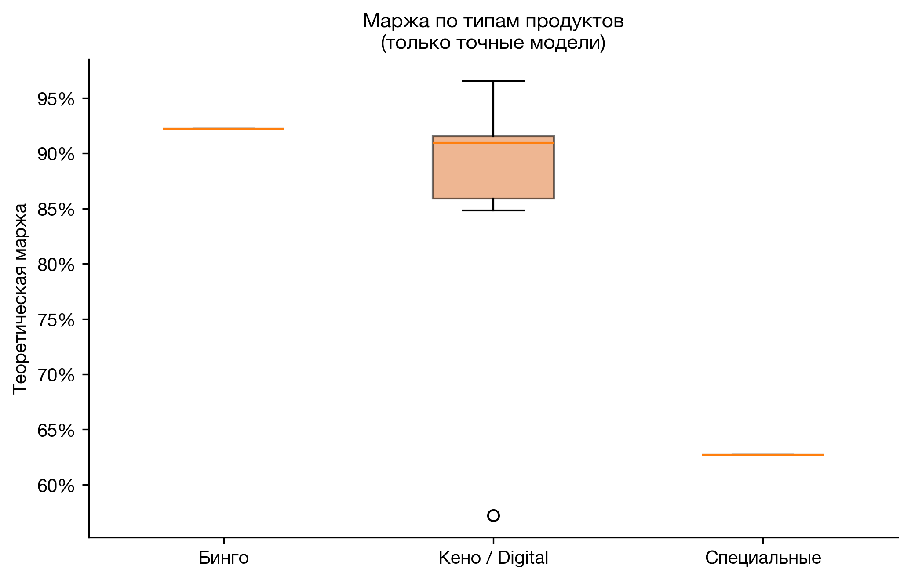
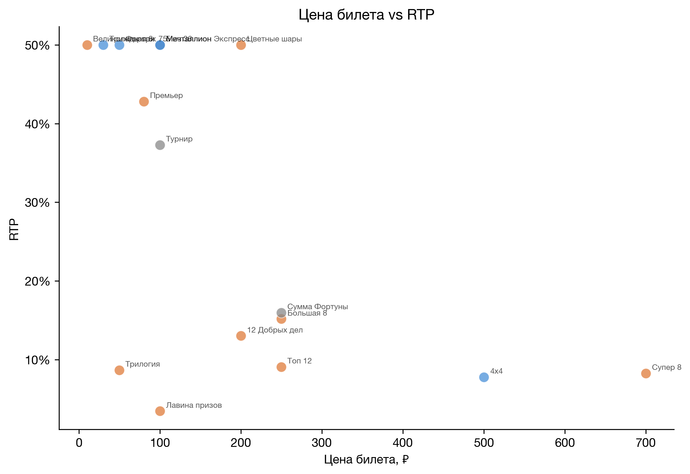

01 Зачем этот кейс
Национальная лотерея (nloto.ru) — одна из крупнейших лотерейных платформ в России. Портфель включает 17 онлайн-продуктов разных механик: от классических кено-стилевых лотерей до бинго и ставочных форматов.
Цель анализа — реконструировать вероятностную экономику продуктов на основе публично доступных правил игры и таблиц выплат. Это позволяет оценить RTP (Return to Player), variance, структуру маржи и выявить стратегические паттерны в портфеле.
Анализ выполнен исключительно на основе открытых данных. Внутренняя финансовая информация оператора не использовалась. Все оценки RTP являются теоретическими и могут отличаться от фактических показателей из-за pari-mutuel пулов, множителей и условий, не отражённых в публичных таблицах.
02 Структура продуктового портфеля
Все 17 продуктов классифицированы по механике розыгрыша:
| Тип | Кол-во | Доля | Механика |
|---|---|---|---|
| Keno / Digital | 10 | 59% | Выбор чисел, совпадения с розыгрышем (hypergeometric) |
| Bingo-style | 5 | 29% | Карточка с числами, последовательное выпадение шаров |
| Special | 2 | 12% | Ставки на спорт, суммы кубиков, комплексные механики |

Портфель выраженно Keno-heavy: 59% продуктов используют механику выбора чисел. Это объяснимо — кено-формат допускает гибкую параметризацию (размер поля, количество полей, множители) и высокую частоту тиражей (до 96 в день).
03 Цена билета и джекпоты
| Продукт | Цена, ₽ | Тип | Частота | Джекпот, ₽ |
|---|---|---|---|---|
| Великолепная 8 | 10 | Keno | каждые 15 мин | 2,1 М |
| Трижды три | 30 | Bingo | каждые 7 ч | 1,1 М |
| Форсаж 75 | 50 | Bingo | каждые 3 ч | 75 М |
| Трилогия | 50 | Keno | каждые 45 мин | 1,5 М |
| Премьер | 80 | Keno | каждые 30 мин | 104 М |
| Мечталлион Экспресс | 100 | Bingo | каждые 30 мин | 100 М |
| Мечталлион | 100 | Bingo | 1×/неделю | 201 М |
| Турнир | 100 | Special | каждый час | 3 М |
| Лавина призов | 100 | Keno | каждые 135 мин | 20 М |
| 5 из 36 | 100 | Keno | каждые 2 ч | 5,5 М |
| 12 Добрых дел | 200 | Keno | каждые 315 мин | 10 М |
| Цветные шары | 200 | Keno | каждый час | 20 М |
| Топ 12 | 250 | Keno | каждые 45 мин | 31 М |
| Сумма Фортуны | 250 | Special | каждый час | 0,9 М |
| Большая 8 | 250 | Keno | каждые 15 мин | 5 М |
| 4×4 | 500 | Bingo | каждый час | 25 М |
| Супер 8 | 700 | Keno | каждые 30 мин | 15 М |
Медианная цена билета — 100 ₽. Диапазон — от 10 ₽ (Великолепная 8, самый дешёвый вход) до 700 ₽ (Супер 8, единственный продукт в премиум-сегменте).

Перекрытие ценовых сегментов
Три ценовых кластера содержат по пять и более продуктов:
- 0–99 ₽ — Трижды три, Форсаж 75, Трилогия, Премьер, Великолепная 8
- 100–199 ₽ — Мечталлион Экспресс, Мечталлион, Турнир, Лавина, 5 из 36
- 200–299 ₽ — 12 Добрых дел, Цветные шары, Топ 12, Сумма Фортуны, Большая 8
Высокая плотность в ценовых сегментах указывает на потенциальный риск каннибализации: продукты конкурируют за одного и того же игрока на одном уровне цены. Дифференциация достигается через variance-профиль, тематику и частоту тиражей.
04 Вероятностное моделирование
4.1 Keno / Digital: hypergeometric distribution
Для лотерей с выбором чисел вероятность совпадения точно описывается гипергеометрическим распределением:
N — общее количество чисел в поле
n — чисел, выбранных игроком
K — чисел, разыгранных лотереей
x — количество совпадений
Пример: «5 из 36». Игрок выбирает 5 чисел из 36, лотерея разыгрывает 5. Распределение вероятностей:
| Совпадений | Вероятность | 1/P | Выплата, ₽ | EV, ₽ |
|---|---|---|---|---|
| 5 из 5 | 0.000003 | 1 : 376 992 | 5 451 685 * | 14.46 |
| 4 из 5 | 0.000411 | 1 : 2 432 | 100 000 | 41.11 |
| 3 из 5 | 0.012334 | 1 : 81 | 10 000 | 123.34 |
| 2 из 5 | 0.119233 | 1 : 8.4 | 1 000 | 119.23 |
* Джекпот — pari-mutuel, делится между победителями.

Expected Value (суммарный) для «5 из 36» составляет 298 ₽ при цене билета 100 ₽, что даёт теоретический RTP > 100%. Это означает, что публичная таблица выплат не отражает всех условий игры — вероятно, действуют дополнительные ограничения: множители, pari-mutuel пулы или условные правила, которые снижают фактический RTP до регуляторного уровня (~50%).
Этот паттерн — расхождение между «наивным» RTP на основе публичных таблиц и фактическим RTP — наблюдается у 8 из 17 продуктов. Для таких продуктов в анализе используется оценка RTP = 50%, соответствующая регуляторному минимуму призового фонда.
4.2 Bingo-style: Monte Carlo simulation
Для бинго-механик аналитическое решение затруднено: выигрыш зависит от последовательности выпадения шаров, а не только от набора совпадений. Для оценки вероятностей применён Monte Carlo с 200 000 итерациями.
Параметры симуляции:
- Мечталлион — карточка 4×4, числа 1–40, 40 ходов розыгрыша
- Мечталлион Экспресс — карточка 4×4, числа 1–80, 50 ходов
- Форсаж 75 — карточка 5×5, числа 1–75, 73 хода
- 4×4 — карточка 4×4, числа 1–80, 43 хода
- Трижды три — карточка 3×3, числа 1–30, 17 ходов
Ключевое отличие бинго от кено — эмоциональная волатильность. Игрок видит, как постепенно закрывается карточка, что создаёт ощущение «почти выиграл» (near-miss effect). Это влияет на повторные покупки сильнее, чем сухой показатель RTP.
05 RTP и частота тиражей

Среди продуктов с точными моделями RTP варьируется от 3.4% (Лавина призов) до 42.8% (Премьер). Средний RTP по точным моделям — ~16%. Продукты с оценочным RTP (50%) выделены полупрозрачным цветом.
| Продукт | RTP | Маржа | Цена, ₽ | Модель |
|---|---|---|---|---|
| Лавина призов | 3.4% | 96.6% | 100 | exact |
| 4×4 | 7.8% | 92.2% | 500 | Monte Carlo |
| Супер 8 | 8.3% | 91.7% | 700 | exact |
| Трилогия | 8.6% | 91.4% | 50 | exact |
| Топ 12 | 9.1% | 90.9% | 250 | exact |
| 12 Добрых дел | 13.0% | 87.0% | 200 | exact |
| Большая 8 | 15.2% | 84.8% | 250 | exact |
| Сумма Фортуны | 16.0% | 84.0% | 250 | оценка |
| Турнир | 37.3% | 62.7% | 100 | exact |
| Премьер | 42.8% | 57.2% | 80 | exact |
Для 7 продуктов с расчётным RTP > 100% использована оценка 50% (регуляторный минимум). Они не включены в таблицу выше.
Частота тиражей vs RTP

Корреляция между частотой тиражей и RTP практически отсутствует: r ≈ −0.05. Оператор не использует частоту как рычаг для систематического снижения RTP — продукты с быстрыми тиражами (каждые 15 минут) и редкими (раз в неделю) могут иметь схожий RTP.
06 Интерпретация портфельной стратегии

- Доминирование Keno. 10 из 17 продуктов — кено-формат. Это позволяет быстро запускать новые лотереи, варьируя параметры (размер поля, число полей, бонусный шар) без изменения базовой инфраструктуры.
- Два кластера волатильности. Продукты чётко делятся на «джекпот-якоря» (Мечталлион, Премьер — ultra-high variance, low frequency) и «рабочие лошадки» (Великолепная 8, Трижды три — low variance, high frequency).
- Ценовое перекрытие. 5 продуктов конкурируют в диапазоне 100 ₽ и 5 — в диапазоне 200–250 ₽. Дифференциация достигается через variance-профиль и тематику, но с точки зрения WAU-каннибализации это зона риска.
- Отсутствие instant-механик. В портфеле нет скретч-карт или мгновенных лотерей. На международных рынках (UK, US) instant-формат занимает до 60% выручки лотерейных операторов.
- Поведенческая сегментация. Бинго-продукты работают через near-miss эффект и эмоциональную вовлечённость (розыгрыш как процесс). Кено-продукты — через быстрый цикл и рациональный расчёт. Специальные продукты (Турнир) — через привязку к внешним событиям.
- Единственный premium-продукт. Супер 8 (700 ₽) — единственный продукт выше 500 ₽. Premium-сегмент (1000+ ₽) отсутствует.
- Частота как retention-инструмент. 4 продукта проводят тиражи чаще, чем раз в 30 минут. Это создаёт habitual loop: результат виден быстро, что стимулирует повторную покупку.


07 Что это может означать для стратегии продукта
На основе публичной механики и структуры портфеля можно выделить три сценария развития — в зависимости от стратегического приоритета оператора.
Если приоритет — удержание (retention)
Высокая частота тиражей и low-variance продукты (Великолепная 8, Трижды три) уже работают на habitual play. На основе публичных данных можно предположить, что усиление кросс-продуктовой лояльности (например, бонусные билеты за серию покупок) увеличило бы переход между продуктами и LTV.
Если приоритет — привлечение (acquisition)
Четыре продукта с ценой ≤50 ₽ формируют воронку входа. Однако отсутствие instant-формата (мгновенные результаты без ожидания тиража) ограничивает импульсные покупки. На международных рынках именно скретч-карты обеспечивают первый контакт с продуктом.
Если приоритет — баланс портфеля
Портфель перекошен в сторону Keno/Digital (59%). Добавление продуктов с принципиально другой механикой (instant, event-based) снизило бы зависимость от одного типа розыгрыша. Кроме того, публикация официальных RTP (как требуется на регулируемых рынках UK/EU) могла бы стать инструментом дифференциации и повышения доверия.
08 Методология и ограничения
Источник данных: публичные страницы nloto.ru,
извлечение через __NEXT_DATA__ (Next.js SSR payload).
Февраль 2026. 17 продуктов, 177 строк таблиц выплат.
Модели:
- Keno / Digital — точный расчёт по hypergeometric distribution
- Bingo — Monte Carlo, 200 000 итераций на продукт
- Турнир — multinomial model (12 матчей, 3 исхода)
- Сумма Фортуны — комбинаторная модель (6d6)
Ограничения:
- RTP для 8 продуктов оценён в 50% (регуляторный минимум), т.к. наивная модель даёт RTP > 100% — признак неполноты публичных данных
- Pari-mutuel джекпоты не поддаются точной оценке без данных о количестве проданных билетов
- Множители и развёрнутые ставки (доступные на сайте) меняют эффективную цену и RTP, но не учтены в базовой модели
- Анализ не использует внутреннюю финансовую информацию оператора
Воспроизводимость: весь код (crawler, модели, визуализации) доступен в исходном репозитории анализа.